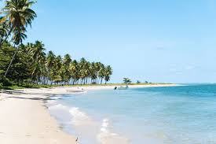

O Brasil é um país abençoado com uma costa de tirar o fôlego, repleta de praias paradisíacas que atraem turistas de todo o mundo. De norte a sul, cada praia tem sua própria magia e encanto, oferecendo cenários deslumbrantes e experiências inesquecíveis.
As praias do Brasil são conhecidas por sua beleza natural impressionante. Falésias coloridas, coqueirais exuberantes e dunas de areia fina compõem paisagens que parecem saídas de um sonho. Cada praia oferece uma nova visão do paraíso, proporcionando um ambiente perfeito para relaxar e se reconectar com a natureza.

Explorar as praias do Brasil é uma oportunidade de se conectar com a natureza em seu estado mais puro. As falésias coloridas, os coqueiros altos balançando ao vento e as águas cristalinas proporcionam um refúgio perfeito para quem busca tranquilidade e beleza. Além disso, a cultura acolhedora e a culinária deliciosa, com frutos do mar frescos e pratos típicos regionais, tornam a experiência ainda mais inesquecível.